|
|
THE FOLLOWING LOCATIONS HAVE BEEN FOUND
PAGE 00
THE AVENGERS:
Death's Door (Sidney Hayers: June 1967)
Pinner Road/Aldenham Road, Watford- Steed and Mrs Peel follow Melford's route in
his Rolls in order to check his premonitions. They stop at a road junction
where they hear "machine gun fire".

THE AVENGERS: My Wildest Dream (Robert Fuest: March 1968)
Clarendon Court,
Sidmouth Road, NW2 - In his dream Paul Gibbons (Murray Hayne) climbs the fire escape of Aloysius
Peregrine’s home and enters. Later, when his dream becomes a horrible reality,
Gibbons jumps to his death and Steed goes to examine the body.
(Identified by Mike Richardson, July 2012)

Q23: Warren Lane, Stanmore - Steed (Patrick Macnee) drives Melville (Barry Warren) in his Yellow Rolls to a wood. He parks the car, then proceeds to thrash Melville for not warning him about the the man entering the apartment he had just searched.

RANDALL AND HOPKIRK [DECEASED]: My Late Lamented Friend and Partner (Cyril
Frankel, 1968)
Queens Gate Terrace into Gore Street SW7
- After leaving Jean’s flat Jeff and Marty drive in Jeff’s Vauxhall towards the
hotel where the beatnik is staying.
(Identified by Geoff Dodd, March 2010)
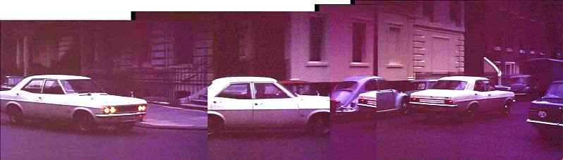
RANDALL AND HOPKIRK [DECEASED]: Vendetta for a Dead Man (Cyril F)
Store Street, WC1 - After scanning a
street with a spotlight for Eric Jansen, the police Landover is called away by
a radio message and drives down this street.
(Identified by Alan Field, 8th November 2009)

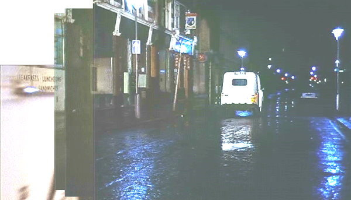
Alan also spotted the following:
Malet Street WC1 - Jeff is driving over to Jeanie's flat in his Vauxhall when he is
intercepted my Marty with new that Jean has already left to see Emile (north up
Malet Street,
passing the end of Keppel Street). Later Jean takes the same route in her Mini
to go and see Emile.
(Spotted by Alan Field, 8th November 2009)
Gower Street, WC1 - Jean is driving her Mini to go and see Emile
when she is stopped at the traffic lights (Store Street/Keppel Street).
(Spotted by Alan Field, 8th November 2009)
RANDALL AND HOPKIRK [DECEASED]: All Work and No Pay (Jeremy Summers: Early 1969)
Barnet Lane, Borehamwood, taken opposite Woodcock
Hill Farm looking West towards Deacons Hill Road - Jeanie drives her
mini to the Foster brothers’ mansion for a demonstration of their spiritualist
powers.
(Identified by Geoff Dodd, September 2009)
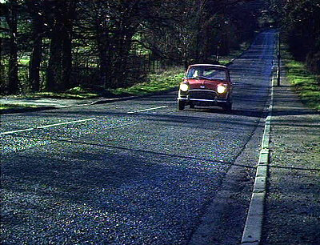
Barnet Lane, Borehamwood, taken outside Chantry looking East
towards Deacons Hill Road - Later Jeanie is summoned to the Foster
brothers’ mansion to start her work with them.
(Identified by Geoff Dodd, September 2009)
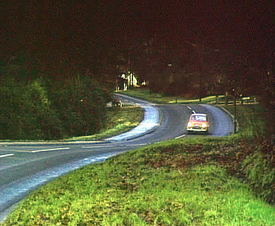
Shots from RANDALL AND HOPKIRK [DECEASED]: You Can Always Find a Fall Guy (Ray Austin: August 1968) which include Old Redding and the gates to Grim’s Dyke Hotel and London Road.
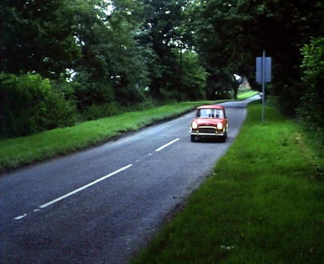
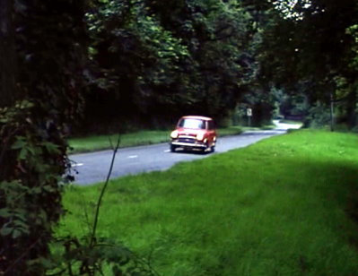
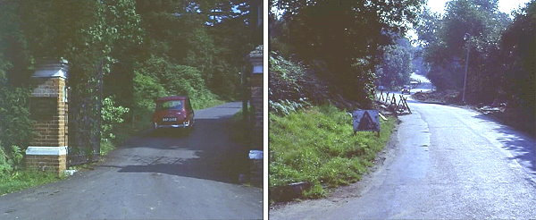
THE AVENGERS: Thingumajig
Mimms Lane – The grass verge where the villains'
caravan is parked.
(Identified by Andy
Lawrence, February 2010).
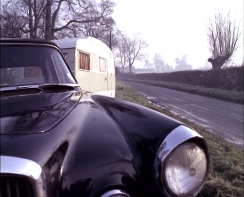
THE AVENGERS: The Correct Way to Kill
Woodchurch Road NW6: Mrs Peel arrives the offices of H. Merryweather,
Chiropodist. Do you have any idea where this is situated?
(Identified by Alan Field, February 2010)
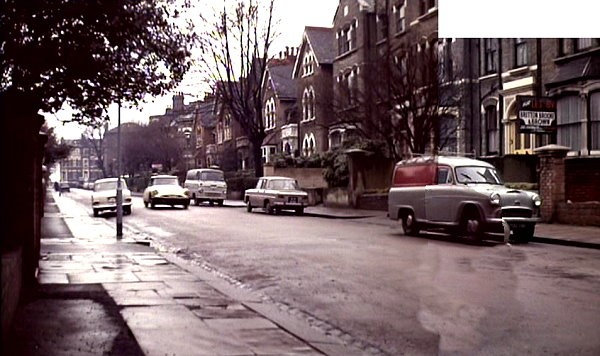
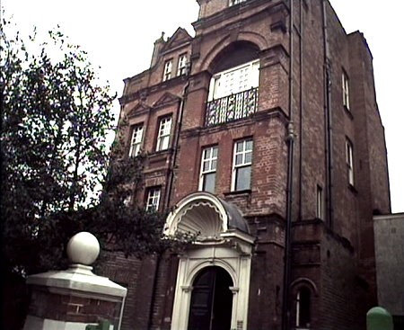
THE
AVENGERS: The Curious Case of the Countless Clues
(Don Sharp: January 1968)
O1 Deeves Hall Lane, Ridge
- Flanders' (Edward de Souza) Rolls Royce breaks down in a quiet country lane.
Fortunately Stanley (Tony Selby) arrives in his breakdown truck to offer
assistance.
(Geoff Dodd, March 2010)
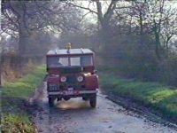

Well
Road - Steed races back to London in a breakdown truck. Hint:
"We see a front and then a rear shot of Steed driving the Landrover breakdown
truck having overpowered Stanley.
(Geoff Dodd, March 2010)
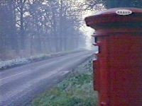
 Geoff Dodd - The Ridgeway features in the shots of the tow truck
weaving across the road and the Citroen exiting a right hand bend.
Geoff Dodd - The Ridgeway features in the shots of the tow truck
weaving across the road and the Citroen exiting a right hand bend.
THE AVENGERS:
The Rotters
(Robert Fuest:
September 1968)
65 Devonshire Mews South, W1 - Tara
King goes to the premises of Mervyn
Sawbow (Frank Middlemass), Antique
Restorer
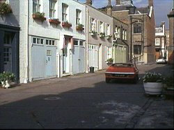
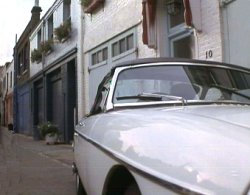
THE AVENGERS: Stay Tuned (Don Chaffey: November 1968)
North Avenue at the junction with Queens Way as
viewed from Black Lion Hill, Shenley:
After visiting the Dr Meitner, the department’s psychiatrist, Tara drives Steed
home in her Lotus Europa.
(Identified by Geoff Dodd, 16th January, 2010)

THE AVENGERS: The £50,000 Breakfast (Robert Day: July 1967)
Home Farm, North Mymms Park: Site of the
accident where Rhodes is killed.
(Identified by David Harris, 19th November 2009)
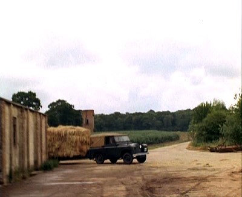
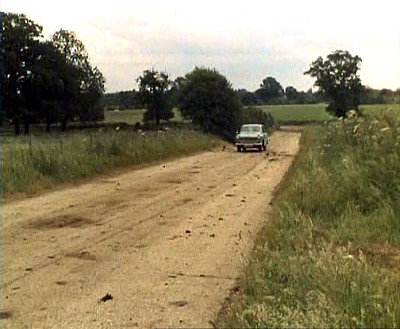
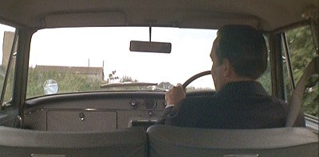
THE AVENGERS: From Venus With Love (Robert Day: October 1966)
J3:
(Identified by Andy Lawrence, 24th January 2010)

J15: Packhorse Lane/Earls Lane - Mrs Peel (Diana Rigg) looses the strange light after attempting to follow it in her Lotus. See sees a light source in a farm opposite and sets off on foot to investigate.
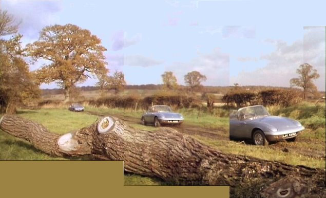
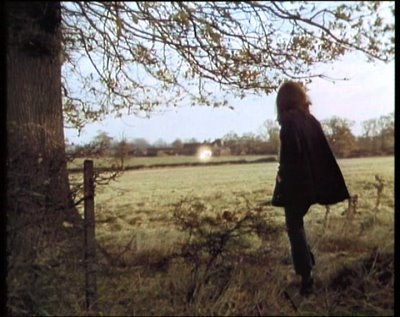
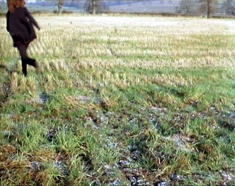
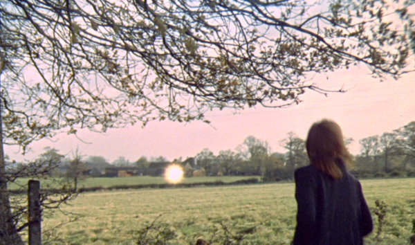
Mrs Peel (Diana Rigg) arrives at the farm looking for the strange light but as she investigates the light suddenly moves away.
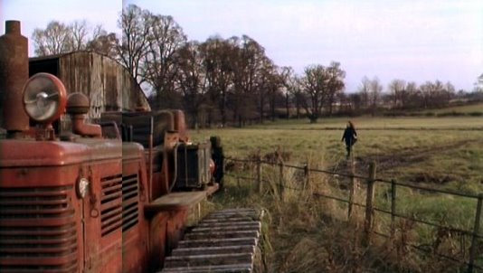
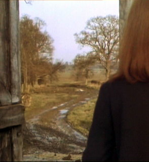
High Canons driveway looking towards Bucketsland Lane -
Mrs Peel can only watch as the mysterious light winds its way down the road.
(Geoff Dodd, April 2010)
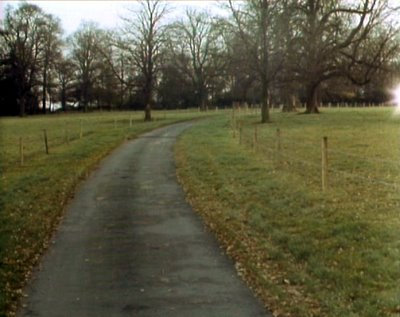
THE SAINT: The Set-Up (Roy Baker: October 1964)
Gloucester Terrace W2 - Clem Enright drives through London to Baytree Club (Lancaster
Gate, W2) and pulls up opposite the club. Men signal from inside
club to car outside. Men rob club Colliganis left behind after the doorman is shot. He flees in a
taxi, but Simon Templar runs to his Volvo and tails him half way across London
(Cilworth Street, Devonshire
Terrace, Queens Gardens). The taxi continues on it’s route with Colligan
aboard and Simon following (opposite number 36).
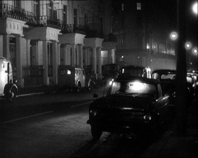
Craven Hill Gardens, W2 - Taxi Stops on a side street and Corrigan gets out.
Simon is not far behind.
(Identified by Geoff Dodd, February 2010)

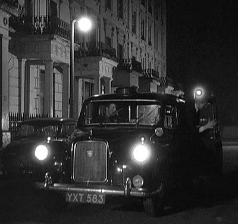
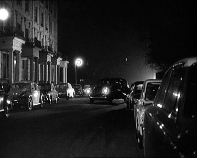
JOURNEY TO THE UNKNOWN: Do Me A Favor
and Kill Me (Gerry O'Hara: 1968)
Oxford Street, W1 – Jeff
Wheeler is walking through a busy street London street. After a car narrowly misses
hitting him it speeds off down the road.
(Identified by Alan Field, December 2009)

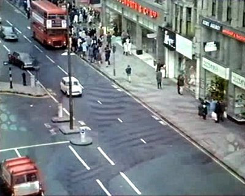
 Alan Field " Both pictures
are Oxford Street,
the first is looking west from the corner of Dering Street. Typically, it’s the
most visible building which has gone, replaced by Debenhams, but all the other
recognisable buildings are unchanged. Picture two is from the opposite side of
the road, looking east across the junction with Old Cavendish Street. The left
turn into Old Cavendish Street was part of a temporary (four year) one-way
system put into place in August 1963 while the ticket hall of Oxford Circus
tube station was rebuilt, beneath a huge steel “umbrella bridge”, to accommodate the
Victoria Line. A DVD about the Victoria Line shows the building and dismantling
of this bridge and the three lanes of westbound traffic using the full width of
the road."
Alan Field " Both pictures
are Oxford Street,
the first is looking west from the corner of Dering Street. Typically, it’s the
most visible building which has gone, replaced by Debenhams, but all the other
recognisable buildings are unchanged. Picture two is from the opposite side of
the road, looking east across the junction with Old Cavendish Street. The left
turn into Old Cavendish Street was part of a temporary (four year) one-way
system put into place in August 1963 while the ticket hall of Oxford Circus
tube station was rebuilt, beneath a huge steel “umbrella bridge”, to accommodate the
Victoria Line. A DVD about the Victoria Line shows the building and dismantling
of this bridge and the three lanes of westbound traffic using the full width of
the road."
JOURNEY TO THE UNKNOWN: Matakitas Is Coming (Michael Lindsay-Hogg: 1968)
Mayfair Library, 25 South Audley Street, London W1 –
The library where magazine researcher June Wiley is looking into murder of the
young librarian Sylvia Hablen
by Andros Matakitas
in 1927.
(Identified by Geoff Dodd, September 23rd, 2009)
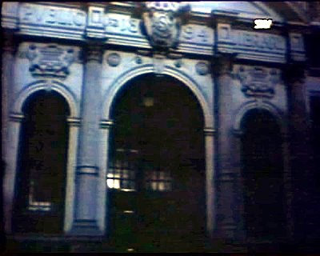
Mount Street Gardens, Mount Street, W1
– Two users of the library (Hilda Braid and ???),discuss the murder of June
Wiley in the park whilst they have their lunch. They then leave to return their
books.
(Identified by Geoff Dodd, September 23rd, 2009)
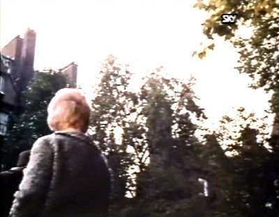
JOURNEY TO THE UNKNOWN: Jane Brown's Body (Alan Gibson: 1968)
Sidney Sussex College, Cambridge
– Paul Amory (David Buck) takes Jane Brown (Stephanie Powers) to see the
Cambridge college where he works. After thinking she has lost David, Jane makes
her way back to David’s lodgings and attempts suicide.
(Identified by Geoff Dodd, September 23rd, 2009)
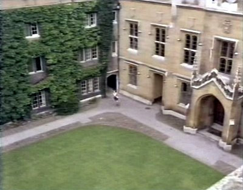
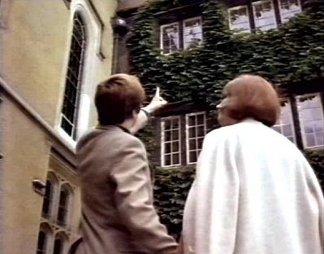
Corner of Sidney Street and Jesus Lane,
Cambridge looking east – After losing Paul Amory,Jane Brown (Stephanie Powers) finds
her way back to his Cambridge college.
(Identified by Geoff Dodd, September 23rd, 2009)
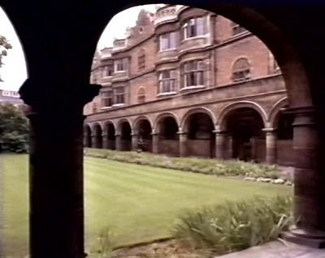
JOURNEY TO THE UNKNOWN: The Madison Equation (Rex Firkin: 1968)
Parliament Hill Fields Athletics Track.
Parliament Hill Fields, Highgate
Road, NW5
– Insurance investigator, Adam Frost (Jack Hedley) goes to see Sir Gerald
Walters (Richard Vernon) at his athletics club to discuss the death of his
employee Ralph Madison.
(Identified by Alan Field, December 2009)
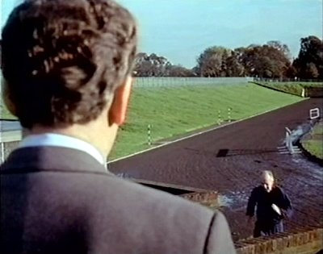

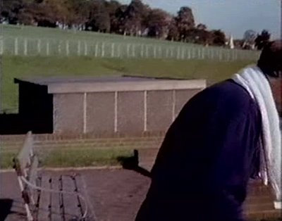
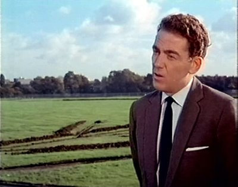
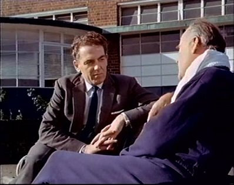
 Alan
Field -"For the past couple of months I have been transferring old VHS
recordings onto DVD. One of these was a railway documentary from the 1980s that
included a piece about the North London Line and the varying landscape it
passes through. To illustrate it there were several shots from the window of a
train and in one the train emerges from behind some trees and you can see the
building, the running track and the grass bank beyond. The whole sequence only
lasted a few seconds and I had to wait for the programme to finish before I
could rewind it and find out from the commentary, where it was."
Alan
Field -"For the past couple of months I have been transferring old VHS
recordings onto DVD. One of these was a railway documentary from the 1980s that
included a piece about the North London Line and the varying landscape it
passes through. To illustrate it there were several shots from the window of a
train and in one the train emerges from behind some trees and you can see the
building, the running track and the grass bank beyond. The whole sequence only
lasted a few seconds and I had to wait for the programme to finish before I
could rewind it and find out from the commentary, where it was."
JOURNEY TO THE UNKNOWN:
Girl Of My Dreams( Peter Sasdy: 1968)
Shoe Street, EC3 – Greg
Richards (Michael Callan)
goes in search of the bank in which the Bank manager stuck in a vault in Carrie
Clark’s premonition.
(Identified by Adrian Grepnold,
December 2009)
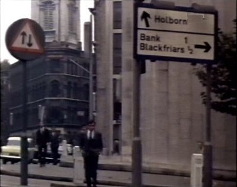
Godliman Street, EC4 – Greg Richards (Michael Callan) finds the bank from Carrie Clark’s premonition, William Thwaite & Sons Bankers, here.
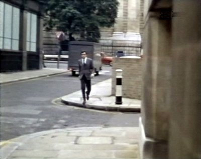
THE SAINT: The Contract (Roger Moore: October 1964)
Cannonbury Square, N1 - Simon drives Dunstan to the back
of Eileen Ballinger’s home as they suspect Farnberg might be there.
(Identified by Peter Astaire, September 29th 2009)
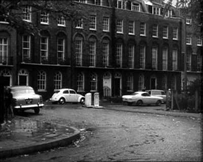
WymondleyRoad to the south” of the Goods Yard, Hitchin Station (now
part of Wedgewood Road redevelopment) - Farnberg drives from London to the spot
where he has hidden Mrs Ballinger. Simon and Dunstan are following close
behind.
(Identified by Alan Field, March 2010)
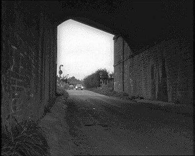
THE BARON: Diplomatic Immunity (Leslie Norman: August 1965)
View from the University Tower looking
N.N.W., Glasgow – Templeton-Greene sends
John Mannering to meet his contact in Pamaranea.
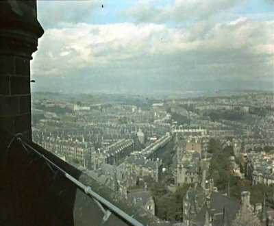
GIDEON’S WAY: The Reluctant Witness (Jeremy Summers,
April 1965)
-
Tiny Bray (Frederick Peisley)
rushes home. Mrs Martha Bray (Gretchen Franklin) goes next door to borrow some
tea.
(Identified by Ian Rogers, February 2010)
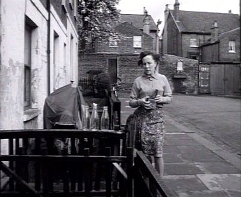

Audley,W1–
They drive along a quiet residential street.
(Identified by Ian Rogers, February 2010)
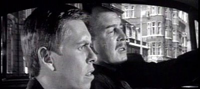

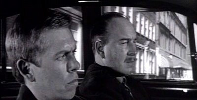
– Gideon (John Gregson) watches as Syd Carter (David Gregory) is put into
a prison van, after his hearing, and is driven away.
(Identified by Ian Rogers, February 2010)

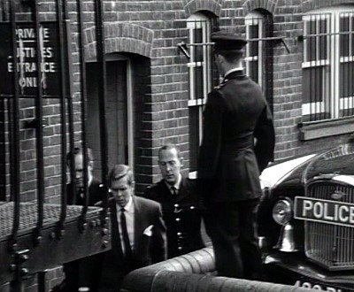

High Road Leytonstone, Waltham Forest, E11
- Fire brigade responds to the fire.
(Identified by Adrian Grepnold, December 2009)


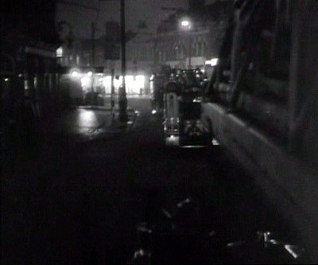
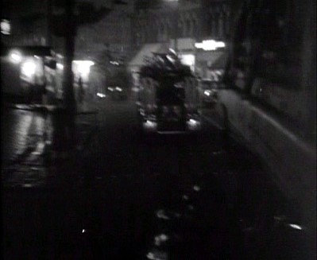
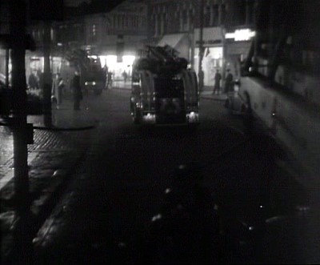

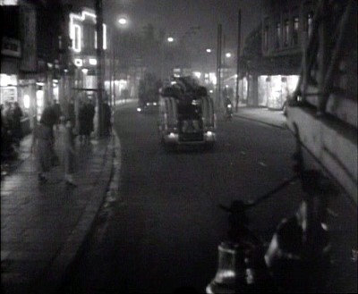

UFO: Confetti
Check A-O.K.
Bishops Rise near the junction with Hilbury, Hatfiled:
This is the shot we see of the ambulance taking Mary Straker to hospital.
(Identified by Geoff Dodd, October 12th 2009)
GIDEON’S WAY: The White Rat (Roy
Baker, August 1964)
Baker Street – Rose Lemman gives
Detective Sergeant Syd
Taylor a lift to division headquarters.
(Identified by Alan Field, November 5th 2009)
The archway with the glass canopy is just
about the only unchanged feature.


Surrey Docks, SE16 – Mickey Keston waits on a cargo ship at the docks for the boat to sail.

GIDEONS WAY: Gang War(Quentin Lawrence - January/February
1965)
Hampstead Police Station, 26 Rosslyn Hill,
Camden, NW3 – Tony Mazzo is called in by Superintendent Browning and Gideon
to discuss the protection rackets.
(Geoff Dodd, July 2009)
Bayham Street / Bayham Place NW1 – Lollo Romano (Jane Merrow) is observed by two policemen arriving
early in the morning at the home she shares with Frank. Later Henry Waldo
(Frederick Bartman)
arrives at the flat to discuss their engagement.
(Identified by Alan Field, November 5th 2009)

Grafton Road, NW5 - Weasel tells
his tale to Browning and Keen after they pick him up in their police car.
(Identified by Alan Field, March 2009)
Beginning near the corner of Ryland Road, passing the shops at the junction with Athlone Street, passing under the railway, and ending outside The Carlton pub on the corner of Warden Road.


THE PROTECTORS: A Kind of Wild Justice (Jeremy Summers: 1972)
Creed Lane, EC4 - The taxi with Harry and Kate Linderman aboard drives through London
on the way to see Regan, a former associate of Kate’s father.
(Identified by Christopher Matheson, May 2009)
GIDEON’S WAY: Big Fish, Little Fish (Cyril
Frankel: October 1964)
Surrey Docks, SE16 – Establishing
shot of docks as Police car ZB4 arrives at the Stone Warehouse looking for
“Happy”.

MAN IN A SUITCASE: The Girl Who Never Was (Robert Tronson: November
1966)
All Saints Road, W11: Kershaw's
returns to Mavis' boarding House.
(Identified by Alan Field, November 9th, 2009)

THE SAINT: The Effete Angler (Anthony Bushell: 1962)
Brown’s
marina, Bimini- Bimini harbour.
Hope Town Lighthouse, Hope Town, Bahamas -A flying boat takes off from Bimini for Nassau.
THE PROTECTORS: The Big Hit (Roy Ward Baker: 1972)
Courtfield
Road, SW7 - The Contassatells Chino (Anthony
Chin) to follow Howard’s heavies in the Rolls leading Paul and the Contessa to the
Howard Swimwear factory.
(Identified by Alan Field, May 2009)
THE PROTECTORS: The Bodyguards (Don Chaffey: 1972)
Deeves Hall Lane - Chino drives Harry and the Contessa to the late
Ralph Corder's
house.
(Identified by Geoff Dodd, March 2010)
THE PROTECTORS: Triple Cross (John Hough: 1971)
C25: Using the Contessa’sradio tracking van, Harry
and the Contessacross a ford and pass through a farm (Redbournbury
Lane and Beeson End Lane) as they home-in on Charlie’s signal.
(Identified by Andy
Lawrence, February 2010).
DANGER MAN: English
Lady Takes Lodgers (Michael
Truman 1965)
Luis Muñoz Marin International Airport, San Juan, Puerto Rico -
Drake returns to Lisbon Airport with Emma Stanway and the rest of the gang.
(Identified by Stephan Thien, February 2009)
Cascais, Portugal
- Establishing an stock shots of Portugal
(Identified by Stephan Thien, February 2009)
 Stephan Thien - “This is a shot of Estoril
taken from Cascais
Beach. The Seixas
Palace is visible in the foreground on left side. The Hotel Estoril
Sol (the highrise
seen behind the palace) was demolished around 2003.”
Stephan Thien - “This is a shot of Estoril
taken from Cascais
Beach. The Seixas
Palace is visible in the foreground on left side. The Hotel Estoril
Sol (the highrise
seen behind the palace) was demolished around 2003.”
Think you know a spot? Need a bigger image? Email me.
< Previous | Index | Avengerland | Next >
Copyright © 2003 Anthony R. McKay